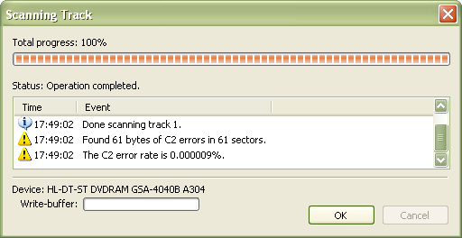

- The Manage Tracks tool displays table of contents (TOC) information about a certain disc. It does also offer tools to save and verify selected tracks. To open the track manager, use the menu:
- Actions
 Manage Tracks...
Manage Tracks...
Select the tracks that you want to work with by clicking the mouse while pressing the shift or control key. You can also use the keyboard arrows to navigate and select in the track list.
- When you save tracks to your hard drive you will be prompted to select a target directory. The tracks will then automatically be saved and named by their track number and type (Track 1.wav, Track 2.iso). To save the selected tracks to you hard drive, press the save tracks button:

- To scan the selected tracks for errors, use the verify tracks button:
Screenshots
The result after verifying a data track:
